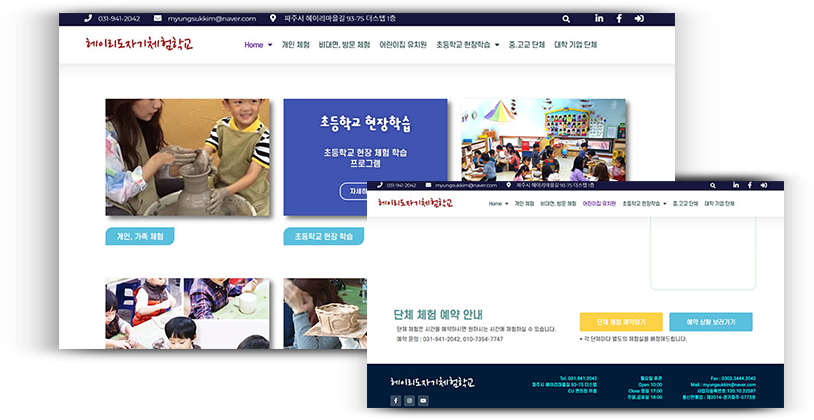

세 번째 포트폴리오
Heyri
Ceramic
Art
Center

DATA
2020.8.18 - 10.09
DEVICE
1920*1080
PARTICIPATION
Design 50%, Markup 40%

Heyri
Ceramic
Art
Center
DATA
2020.8.18 - 10.09
DEVICE
1920*1080
PARTICIPATION
Design 50%, Markup 40%
도자기의 차분한 분위기와 어울리는 컬러를 사용하였으며
트랜드와 맞지 않는 기존의 웹사이트에 세련된 느낌을 부여하였습니다.

브랜드 인식을 높이기 위하여 세련된 느낌의 로고로 리디자인하였습니다.

도자기 소재인 흙을 연상시키는 베이지 계열 중 #E2CEBD을 메인컬러로 사용하습니다.
다양한 색상의 사용은 줄이고 짙은 갈색으로 포인트를 주며 회색 색상을 적절히 사용하였습니다.
Main Beige - #E2CEBD
R : 226 G : 206 B : 189
Point Brown - #442A0D
R : 68 G : 42 B : 13
Main text - #000000
R : 0 G : 0 B : 0
Sub text - #999999
R : 153 G : 153 B : 153
깔끔하면서 가독성을 높일 수 있는 고딕체를 위주로 사용하였으며,
영문은 Josefin Sans를 사용하여 도자기의 둥그스름한 모양과 매치되도록 하였습니다.
구조화되지 않은 네비게이션으로
혼란을 주는 UX
<기존 홈페이지>

브랜드를 나타내는 메인 페이지가 다소 어지럽게 정렬되어 있어
사용자가 불편함을 느낄 수 있는 구조였고, 사이트 주 방문 이유인 체험예약을
한 번에 찾아보기 어려워 홈페이지의 이용에 불편을 느꼈으리라 예상하였습니다.
그리하여 구조화된 네비게이션과 예약페이지를 구성하고
여기저기 나열된 체험사진들을 앨범 페이지에서 한꺼번에 감상할 수 있도록 하여
사용자의 편의성을 높이고 이탈율을 줄이는 것을 목표로 하였습니다.
1920px 해상도를 기준으로 index와 5개의 서브페이지의 와이어프레임을 제작하였습니다.
웹페이지 주 사용 대상이 체험예약 페이지로 손쉽게 이동할 수 있도록 메인페이지에 버튼을 배치하여
페이지의 기능성을 높였으며, 프로그램을 그룹화하여 네비게이션을 정돈하였습니다.
메인페이지에 동영상을 사용한 비주얼적 요소를 사용하여 브랜드 이미지를 고급화하였습니다.
또한 표준 웹 접근성을 따라 마크업을 작성하였습니다.
운용의 용이성(Operable)
2.1 입력 장치 접근성 - 2.1.2 (초점 이동) 키보드에 의한 초점은 논리적으로 이동해야 하며 시각적으로 구별할 수 있어야 한다.
탭 컨텐츠에 알맞은 aira 속성을 사용하고 tabIndex로 포커싱을 제어하도록 스크립트를 작성하였습니다.
버튼으로 사용한 a태그에 role="button" 속성을 적어주며 스크린리더기에서 읽힐 수 있도록 적용하였습니다.
운용의 용이성(Operable)
2.4 쉬운 네비게이션 - 2.4.1 (반복 영역 건너뛰기) 콘텐츠의 반복되는 영역은 건너뛸 수 있어야 한다.
Tab 키를 이용하여 본문으로 건너뛸 수 있도록 skip 네비게이션을 설정하였습니다.
마우스 사용자에게는 보이지 않도록 absolute와 left 좌표값을 주어 조정하였습니다.